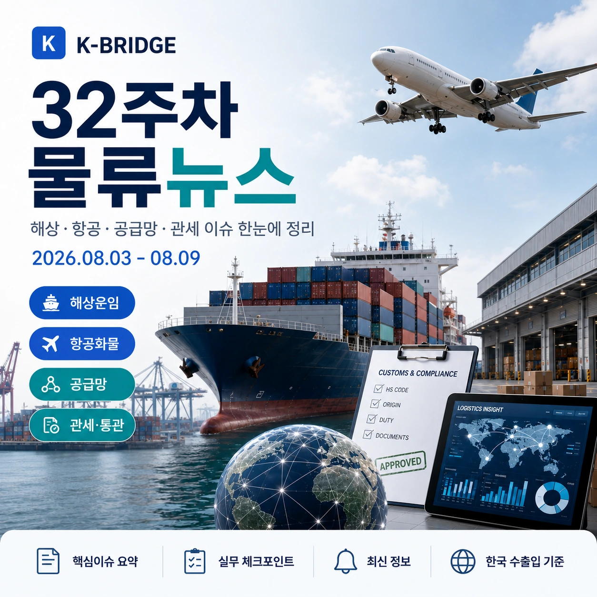
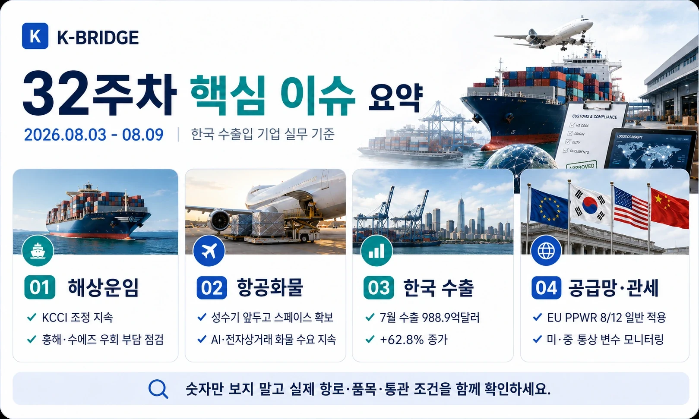
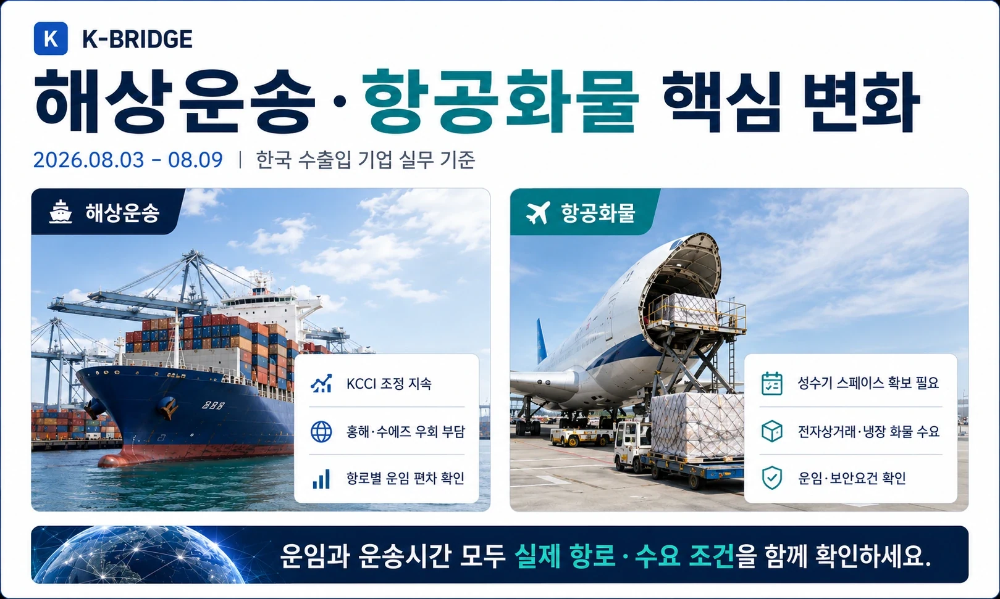
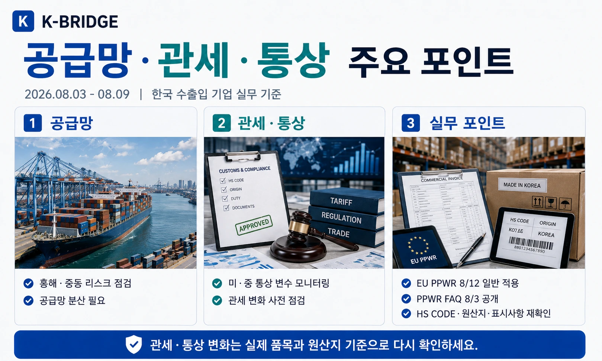
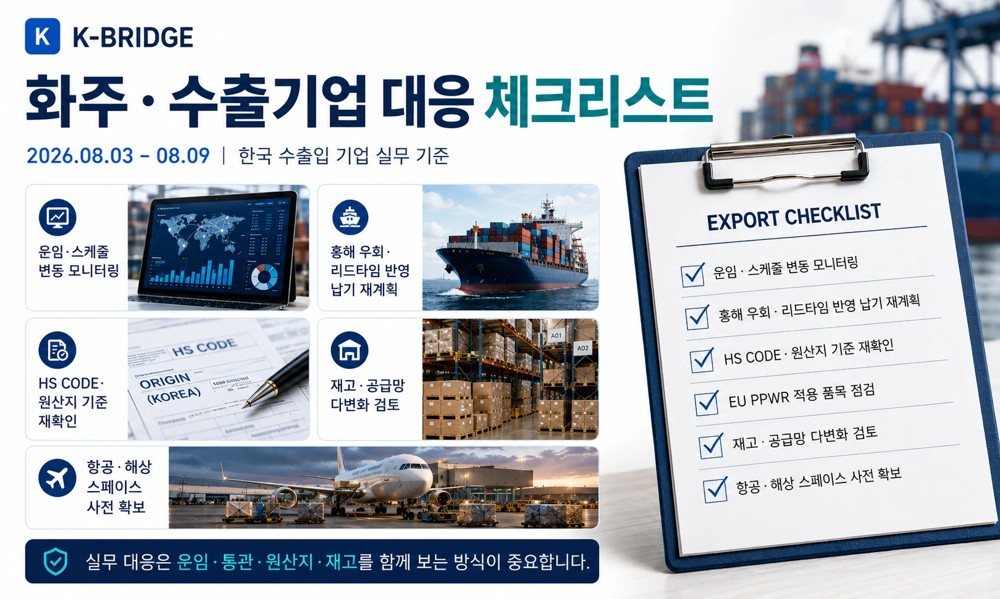

핵심 요약
32주차 물류시장은 한국발 컨테이너 운임의 소폭 반등, 항공화물 수요 강세와 유류할증료 인상 예고, 미국 Section 301 관세의 실무 적용, EU PPWR 일반 적용을 앞둔 포장 규정 점검, 흑해·호르무즈 해상 리스크가 핵심입니다.

32주차 시장 한눈에 보기
8월 3일 KCCI는 4,138로 전주 대비 0.36% 올라 3주 연속 조정 뒤 소폭 반등했습니다. 미주 서안·동안은 상승한 반면 유럽·지중해는 하락해, 종합지수보다 항로별 방향 차이를 확인해야 합니다. 7월 국내 항공화물은 40만톤을 넘었고 글로벌 항공화물 수요도 공급보다 빠르게 증가하고 있습니다.
| 항로·지표 | 32주차 기준 | 전주 대비 | 실무 해석 |
|---|---|---|---|
| KCCI 종합 | 4,138 | +0.36% | 3주 조정 뒤 소폭 반등 |
| 미주 서안 | $6,172/FEU | +0.92% | 성수기 수요·공급조절 영향 |
| 미주 동안 | $8,986/FEU | +2.54% | 장거리 운항 부담 지속 |
| 유럽 | $4,884/FEU | -1.27% | 현물운임 조정 |
| 지중해 | $5,933/FEU | -2.85% | 위험비용은 별도 확인 |
지표 기준: KCCI는 한국해양진흥공사의 부산발 컨테이너 현물운임 지수입니다. SCFI는 7월 31일 3,205.97로 전주 대비 4.67% 상승했습니다. 실제 견적은 선사·출항일·품목·부대비용에 따라 달라질 수 있습니다.

해상운송·글로벌 해상 리스크
KCCI 4,138 - 미주 강세로 3주 연속 하락 뒤 반등
8월 3일 KCCI는 전주 4,123보다 15포인트 올랐습니다. 미주 서안은 6,172달러/FEU, 미주 동안은 8,986달러/FEU로 상승한 반면 북유럽과 지중해는 하락했습니다. 중국발 SCFI도 7월 31일 3,205.97로 4.67% 올라 미주 노선을 중심으로 현물운임이 다시 강해졌습니다.
흑해 선박·항만 공격 확대 - 곡물·원유 운임과 전쟁보험 부담 상승
Reuters는 8월 5일 흑해에서 선박·항만·수출터미널 공격이 급증해 곡물과 원유 흐름이 흔들리고 있다고 보도했습니다. 일부 선적 중단과 물량 감소가 발생했고 운임과 전쟁위험 보험료가 함께 상승했습니다. 한국의 사료곡물·에너지 수입기업은 선적항과 보험조건을 재확인할 필요가 있습니다.
호르무즈·홍해 우회 지속 - 사우디 대형 유조선도 남아공 방향으로 선회
8월 3일 선박추적 자료에서 사우디 국적 초대형 유조선 6척이 걸프만에서 방향을 바꿔 남아프리카 방면으로 이동한 것으로 나타났습니다. 아시아 원유 수입은 회복 중이지만 이란전쟁 이전 수준에는 못 미쳐, 중동산 원유·석유제품 화주는 항로와 보험·리드타임 변동을 계속 관리해야 합니다.
항공화물·유류할증료
7월 국내 항공화물 403,639톤 - 1~7월 누적 270만톤
국토교통부 항공정보포털 통계에서 2026년 7월 항공화물은 403,639톤, 1~7월 누적은 2,708,468톤으로 집계됐습니다. 반도체·전자상거래·고부가가치 화물 수요가 이어지는 가운데 성수기 진입 전 스페이스 선점이 중요해지고 있습니다.
IATA 6월 글로벌 항공화물 수요 +8.5% - 공급 증가율 4.4% 상회
IATA에 따르면 6월 글로벌 항공화물 수요(CTK)는 전년 동월 대비 8.5%, 국제화물은 9.6% 증가했습니다. 공급(ACTK)은 4.4% 늘어 수요 증가율에 못 미쳤습니다. 특히 아시아-북미 노선이 강한 흐름을 보여 한국발 반도체·전자부품 화물의 선복 경쟁이 이어질 수 있습니다.
대한항공 8월 국제화물 유류할증료 상향 - 장거리 1,320원/kg
대한항공은 8월 3일 한국발 국제선 화물 유류할증료를 공지했습니다. 8월 16일부터 9월 15일까지 장거리 1,320원/kg, 중거리 1,230원/kg, 단거리 1,170원/kg이 적용됩니다. 직전 장거리 1,050원/kg보다 높아져 항공견적의 총비용을 다시 계산해야 합니다.
국내운송·수출입 동향
8월 1일부터 안전운임 일부개정 시행 - 전배운송 요율표 등 최신 고시 확인
2026년 적용 화물자동차 안전운임 고시 일부개정이 8월 1일부터 시행됐습니다. 최근 유가 변동을 반영한 운임 조정과 항만 터미널 간 전배운송 요율표가 포함돼, 수출입 컨테이너 내륙운송 견적은 8월 기준 고시로 다시 확인해야 합니다.
32주차 기준 최신 월간 수출통계 - 7월 수출 988.9억달러, 반도체 400억달러 상회
산업통상부의 최신 월간 공식통계에서 7월 수출은 988억9천만달러로 전년 동월 대비 62.8% 증가했습니다. 반도체 수출은 2개월 연속 400억달러를 넘었고 주력 20대 품목 중 19개가 증가했습니다. 수입은 685억6천만달러, 무역수지는 303억2천만달러 흑자였습니다.

관세·통상·포장규정
미국 Section 301 - 한국산은 MFN과 합산해 12.5%가 되도록 적용
USTR의 강제노동 관련 Section 301 조치에서 한국산 비면제 품목은 MFN 세율이 12.5% 미만이면 MFN과 Section 301 관세의 합계가 12.5%가 되도록 적용되고, MFN이 이미 12.5% 이상이면 Section 301 추가세율은 0%입니다. 모든 한국산에 12.5%가 추가되는 구조가 아니므로 HTS와 면제목록을 품목별로 확인해야 합니다.
EU PPWR 8월 12일 일반 적용 임박 - EU향 포장재 사전점검 필요
EU 포장 및 포장폐기물 규정(PPWR)은 2025년 2월 발효됐으며 2026년 8월 12일부터 일반적으로 적용됩니다. EU 집행위원회는 8월 3일 실무 FAQ도 공개했습니다. EU향 수출기업은 포장재 구성, 재활용·재사용 요건, 라벨과 기술문서 등 자사 포장 규정 적용 여부를 확인해야 합니다.
흑해·중동의 동시 리스크 - 원자재 계약에 운임·보험 변동조항 점검
흑해에서는 곡물·원유 터미널 공격이 늘고 중동에서는 호르무즈 재개 여부가 불확실한 상황입니다. 한국 화주 관점에서는 곡물·원유·석유제품 계약 시 선적항 대체, 전쟁위험 보험, 운임 급등과 리드타임 연장에 대한 계약 조항을 함께 검토할 필요가 있습니다.
통상 주의: 미국 관세와 EU 포장규정은 품목·원산지·포장 형태에 따라 적용범위가 달라질 수 있습니다. 견적 단계에서 일반 세율이나 기사 제목만 적용하지 말고 실제 HTS·원산지·포장사양을 기준으로 확인하세요.
이번 주 추가 물류 동향

화주·수출기업 대응 체크리스트
- 해상운송: KCCI 종합보다 실제 항로·선사·출항일 운임, 장비와 Free Time을 확인합니다.
- 흑해·중동: 전쟁보험, 우회항로, 선적항 대체와 추가 리드타임을 계약에 반영합니다.
- 항공화물: 8월 16일 이후 대한항공 유류할증료를 Chargeable Weight 기준으로 다시 계산합니다.
- 국내운송: 8월 1일 개정 안전운임과 터미널 간 전배운송 요율을 적용합니다.
- 미국 수출: HTS CODE, MFN 세율, Section 301 면제 여부를 함께 확인합니다.
- EU 수출: PPWR 적용 대상 포장재의 재활용·재사용·라벨·증빙 요건을 점검합니다.
- 원자재: 곡물·원유·석유제품은 대체 공급처와 안전재고 수준을 다시 확인합니다.
- 수출 증가 대응: 반도체·전자부품 등 고부가 화물의 항공·해상 선복을 조기에 확보합니다.
운임 숫자만 보지 말고 관세·할증·포장규정까지 함께 확인하세요
케이브릿지는 해상·항공·해외특송·국내운송과 통관 조건을 함께 검토해 품목과 납기에 맞는 운송안을 안내합니다.